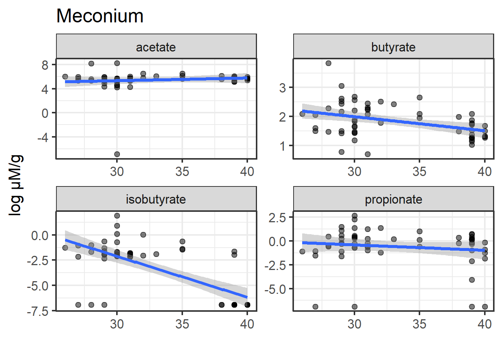
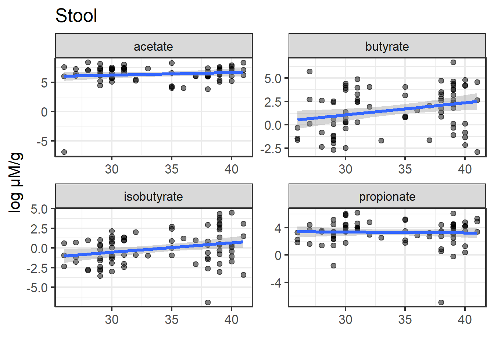

library(readxl)
df_clinic <- read_excel("df_clinic_final.xlsx")
df_clinic <- as.data.frame(df_clinic)
row.names(df_clinic) <- df_clinic$Sample
names(df_clinic)[12] <- "Gestation"
df_clinic -> df_clinic_oriFIGURE_10_GESTATION
IMPORT DATASET
library(readxl)
df_SCFA <- read_excel("SCFA_stool.xlsx")
df_SCFA <- as.data.frame(df_SCFA)
names(df_SCFA) <- c("Sample", "acetate_stool", "propionate_stool", "isobutyrate_stool", "butyrate_stool")
row.names(df_SCFA) <- df_SCFA$Sample
# df_SCFA <- df_SCFA[row.names(df_clinic), ]# identical(df_clinic$Sample, df_SCFA$Sample)
df_clinic <- merge(x = df_clinic[ , c("Sample", "Termness")],
y = df_SCFA,
all = T,
by = "Sample")
row.names(df_clinic) <- df_clinic$Samplelibrary(readxl)
df_meconium <- read_excel("SCFA_meconium.xlsx")New names:
• `` -> `...1`df_meconium <- as.data.frame(df_meconium)
names(df_meconium) <- c("Sample", "acetate_meconium", "propionate_meconium", "isobutyrate_meconium", "butyrate_meconium")
row.names(df_meconium) <- df_meconium$Sampledf_clinic <- merge(x = df_clinic,
y = df_meconium,
all = T,
by = "Sample")
row.names(df_clinic) <- df_clinic$Sampledf_clinic$Termness[grep("^HD",
df_clinic$Sample,
value = F)] <- "adult"
df_clinic |> dplyr:::arrange(Termness, Sample) -> df_clinic
library(openxlsx)
# CB22 term
# CB39 term
# CB40 term
# CB41 term
# CB47 preterm
# CB48 preterm
# CB62
# CB65 preterm
# CB79 preterm
df_clinic$Termness[which(df_clinic$Sample == "CB22")] <- "term"
df_clinic$Termness[which(df_clinic$Sample == "CB39")] <- "term"
df_clinic$Termness[which(df_clinic$Sample == "CB40")] <- "term"
df_clinic$Termness[which(df_clinic$Sample == "CB41")] <- "term"
df_clinic$Termness[which(df_clinic$Sample == "CB47")] <- "preterm"
df_clinic$Termness[which(df_clinic$Sample == "CB48")] <- "preterm"
df_clinic$Termness[which(df_clinic$Sample == "CB65")] <- "preterm"
df_clinic$Termness[which(df_clinic$Sample == "CB79")] <- "preterm"BABY
df_clinic |> subset(Termness != "adult") -> df_clinicdf_reg <- merge(x = df_clinic,
y = df_clinic_ori[ , c("Sample", "Gestation")],
all.x = T,
by = "Sample")lapply(df_reg[ , -c(1,2)],
summary)$acetate_stool
Min. 1st Qu. Median Mean 3rd Qu. Max. NA's
0.0 417.5 774.3 1072.3 1492.5 4596.3 7
$propionate_stool
Min. 1st Qu. Median Mean 3rd Qu. Max. NA's
0.00 12.53 32.64 67.91 79.22 483.75 7
$isobutyrate_stool
Min. 1st Qu. Median Mean 3rd Qu. Max. NA's
0.0000 0.2089 1.0368 5.8880 3.2568 88.7627 7
$butyrate_stool
Min. 1st Qu. Median Mean 3rd Qu. Max. NA's
0.05298 0.72727 6.16122 35.29597 34.18959 811.57235 7
$acetate_meconium
Min. 1st Qu. Median Mean 3rd Qu. Max. NA's
0.0 205.6 294.8 411.4 385.2 3834.5 22
$propionate_meconium
Min. 1st Qu. Median Mean 3rd Qu. Max. NA's
0.0000 0.3833 0.8478 1.6112 1.7607 14.1651 22
$isobutyrate_meconium
Min. 1st Qu. Median Mean 3rd Qu. Max. NA's
0.0000 0.0000 0.1266 0.2911 0.1867 6.7652 22
$butyrate_meconium
Min. 1st Qu. Median Mean 3rd Qu. Max. NA's
1.998 4.141 5.302 7.245 8.768 46.614 22
$Gestation
Min. 1st Qu. Median Mean 3rd Qu. Max. NA's
26.00 30.00 34.00 33.94 39.00 41.00 8 MECONIUM
df_reg_meconium <- df_reg[ , c(1,2,11,7:10)]
library(tidyr)
df_long <- tidyr:::pivot_longer(df_reg_meconium,
cols = c(4:7),
names_to = "SCFA",
values_to = "value")
df_long <- as.data.frame(df_long)
df_long <- na.omit(df_long)
df_long$value <- log(df_long$value+0.001)
gsub(pattern = "_meconium",
replacement = "",
df_long$SCFA) -> df_long$SCFAfit_acetate <- lm(acetate_meconium ~ Gestation,
data = df_reg_meconium)
summary(fit_acetate)
Call:
lm(formula = acetate_meconium ~ Gestation, data = df_reg_meconium)
Residuals:
Min 1Q Median 3Q Max
-462.8 -238.9 -110.2 18.3 3371.7
Coefficients:
Estimate Std. Error t value Pr(>|t|)
(Intercept) 929.22 622.97 1.492 0.141
Gestation -15.55 18.60 -0.836 0.407
Residual standard error: 659.7 on 56 degrees of freedom
(30 observations deleted due to missingness)
Multiple R-squared: 0.01233, Adjusted R-squared: -0.005309
F-statistic: 0.699 on 1 and 56 DF, p-value: 0.4067fit_propionate <- lm(propionate_meconium ~ Gestation,
data = df_reg_meconium)
summary(fit_propionate)
Call:
lm(formula = propionate_meconium ~ Gestation, data = df_reg_meconium)
Residuals:
Min 1Q Median 3Q Max
-1.9565 -1.0625 -0.4569 0.1866 12.4508
Coefficients:
Estimate Std. Error t value Pr(>|t|)
(Intercept) 4.13704 2.12797 1.944 0.0569 .
Gestation -0.08076 0.06353 -1.271 0.2089
---
Signif. codes: 0 '***' 0.001 '**' 0.01 '*' 0.05 '.' 0.1 ' ' 1
Residual standard error: 2.253 on 56 degrees of freedom
(30 observations deleted due to missingness)
Multiple R-squared: 0.02805, Adjusted R-squared: 0.01069
F-statistic: 1.616 on 1 and 56 DF, p-value: 0.2089fit_isobutyrate <- lm(isobutyrate_meconium ~ Gestation,
data = df_reg_meconium)
summary(fit_isobutyrate)
Call:
lm(formula = isobutyrate_meconium ~ Gestation, data = df_reg_meconium)
Residuals:
Min 1Q Median 3Q Max
-0.5685 -0.2924 -0.1378 -0.0361 6.3196
Coefficients:
Estimate Std. Error t value Pr(>|t|)
(Intercept) 1.67425 0.87888 1.905 0.0619 .
Gestation -0.04095 0.02624 -1.561 0.1242
---
Signif. codes: 0 '***' 0.001 '**' 0.01 '*' 0.05 '.' 0.1 ' ' 1
Residual standard error: 0.9307 on 56 degrees of freedom
(30 observations deleted due to missingness)
Multiple R-squared: 0.0417, Adjusted R-squared: 0.02458
F-statistic: 2.437 on 1 and 56 DF, p-value: 0.1242fit_butyrate <- lm(butyrate_meconium ~ Gestation,
data = df_reg_meconium)
summary(fit_butyrate)
Call:
lm(formula = butyrate_meconium ~ Gestation, data = df_reg_meconium)
Residuals:
Min 1Q Median 3Q Max
-7.377 -2.781 -0.751 1.382 36.601
Coefficients:
Estimate Std. Error t value Pr(>|t|)
(Intercept) 22.9142 5.8043 3.948 0.000223 ***
Gestation -0.4608 0.1733 -2.659 0.010197 *
---
Signif. codes: 0 '***' 0.001 '**' 0.01 '*' 0.05 '.' 0.1 ' ' 1
Residual standard error: 6.146 on 56 degrees of freedom
(30 observations deleted due to missingness)
Multiple R-squared: 0.1121, Adjusted R-squared: 0.09625
F-statistic: 7.071 on 1 and 56 DF, p-value: 0.0102library(ggplot2)
ggplot(data = df_long,
mapping = aes(x = Gestation,
y = value)) +
geom_point(alpha = 0.5) +
geom_smooth(method = "lm") +
facet_wrap(~ SCFA,
scale = "free") +
theme_bw(base_size = 16) +
theme(legend.position = "none") +
labs(x = "",
y = "log \u03bcM/g",
title = "Meconium") +
coord_cartesian(clip = "off")`geom_smooth()` using formula = 'y ~ x'
ggsave(filename = "FIGURE_10_GESTATION_MECONIUM.svg",
width = 8,
height = 6,
dpi = 300,
units = "in")`geom_smooth()` using formula = 'y ~ x'STOOL
df_reg_stool <- df_reg[ , c(1,2,11,3:6)]
library(tidyr)
df_long <- tidyr:::pivot_longer(df_reg_stool,
cols = c(4:7),
names_to = "SCFA",
values_to = "value")
df_long <- as.data.frame(df_long)
df_long <- na.omit(df_long)
df_long$value <- log(df_long$value+0.001)
gsub(pattern = "_stool",
replacement = "",
df_long$SCFA) -> df_long$SCFAfit_acetate <- lm(acetate_stool ~ Gestation,
data = df_reg_stool)
summary(fit_acetate)
Call:
lm(formula = acetate_stool ~ Gestation, data = df_reg_stool)
Residuals:
Min 1Q Median 3Q Max
-1140.2 -646.5 -299.8 387.2 3469.8
Coefficients:
Estimate Std. Error t value Pr(>|t|)
(Intercept) 1318.85 795.49 1.658 0.101
Gestation -6.87 23.21 -0.296 0.768
Residual standard error: 997.9 on 78 degrees of freedom
(8 observations deleted due to missingness)
Multiple R-squared: 0.001122, Adjusted R-squared: -0.01168
F-statistic: 0.08762 on 1 and 78 DF, p-value: 0.768fit_propionate <- lm(propionate_stool ~ Gestation,
data = df_reg_stool)
summary(fit_propionate)
Call:
lm(formula = propionate_stool ~ Gestation, data = df_reg_stool)
Residuals:
Min 1Q Median 3Q Max
-70.25 -53.89 -35.80 9.27 413.97
Coefficients:
Estimate Std. Error t value Pr(>|t|)
(Intercept) 80.5503 80.1156 1.005 0.318
Gestation -0.3476 2.3373 -0.149 0.882
Residual standard error: 100.5 on 78 degrees of freedom
(8 observations deleted due to missingness)
Multiple R-squared: 0.0002834, Adjusted R-squared: -0.01253
F-statistic: 0.02211 on 1 and 78 DF, p-value: 0.8822fit_isobutyrate <- lm(isobutyrate_stool ~ Gestation,
data = df_reg_stool)
summary(fit_isobutyrate)
Call:
lm(formula = isobutyrate_stool ~ Gestation, data = df_reg_stool)
Residuals:
Min 1Q Median 3Q Max
-13.040 -8.584 -0.947 1.461 76.696
Coefficients:
Estimate Std. Error t value Pr(>|t|)
(Intercept) -28.2150 11.2930 -2.498 0.01458 *
Gestation 1.0070 0.3295 3.057 0.00307 **
---
Signif. codes: 0 '***' 0.001 '**' 0.01 '*' 0.05 '.' 0.1 ' ' 1
Residual standard error: 14.17 on 78 degrees of freedom
(8 observations deleted due to missingness)
Multiple R-squared: 0.107, Adjusted R-squared: 0.09551
F-statistic: 9.342 on 1 and 78 DF, p-value: 0.003066fit_butyrate <- lm(butyrate_stool ~ Gestation,
data = df_reg_stool)
summary(fit_butyrate)
Call:
lm(formula = butyrate_stool ~ Gestation, data = df_reg_stool)
Residuals:
Min 1Q Median 3Q Max
-55.90 -36.32 -21.01 -2.94 761.35
Coefficients:
Estimate Std. Error t value Pr(>|t|)
(Intercept) -61.399 78.545 -0.782 0.437
Gestation 2.862 2.292 1.249 0.215
Residual standard error: 98.53 on 78 degrees of freedom
(8 observations deleted due to missingness)
Multiple R-squared: 0.01961, Adjusted R-squared: 0.00704
F-statistic: 1.56 on 1 and 78 DF, p-value: 0.2154library(ggplot2)
ggplot(data = df_long,
mapping = aes(x = Gestation,
y = value)) +
geom_point(alpha = 0.5) +
geom_smooth(method = "lm") +
facet_wrap(~ SCFA,
scale = "free") +
theme_bw(base_size = 16) +
theme(legend.position = "none") +
labs(x = "",
y = "log \u03bcM/g",
title = "Stool") +
coord_cartesian(clip = "off")`geom_smooth()` using formula = 'y ~ x'
ggsave(filename = "FIGURE_10_GESTATION_STOOL.svg",
width = 8,
height = 6,
dpi = 300,
units = "in")`geom_smooth()` using formula = 'y ~ x'